01
基本达标
地球上的西藏
- 已经能做什么
- 已能在同一地球中区分洲、国家、自治区与自然高原；定位层级和文字对应。
- 差距与边界
- 本章以观察和尺度定位为主，不要求虚构“改变地理”的实验。仍需首次观看者确认能区分行政范围与自然范围。
- 收口标准
- 用户能指出西藏所在层级，说明西藏自治区与青藏高原不是同一范围；能回到完整地球。
- 这章怎么处理
- 保留并冻结。不再加地理标签或扩展开场。
查看本轮证据 · 1 张
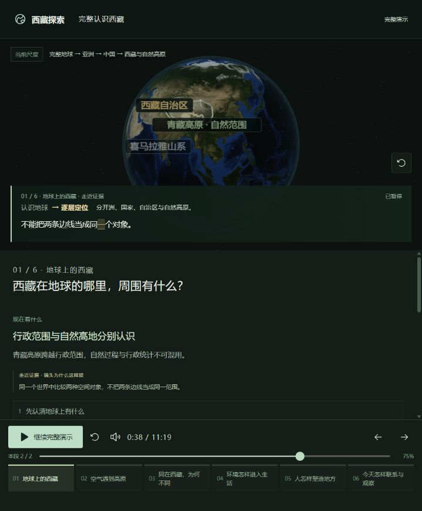
项目思路与阶段验收 · 2026-10-18
主线已贯通，整体产品尚未验收通过。
当前版本：六章 / 21段 / 11:41。本页记录最初目标、六章差距与明确的停止条件，不把“又优化了一轮”作为完成标准。
01 / 为什么做
目标是帮助没有背景知识的人，从完整地球找到西藏，理解全球环境与高原地形怎样造成地区差异，再理解人的行动怎样形成生活、文化与历史，最后带着问题观察今天的地方。
整体地图 → 具体地方 → 对照变化 → 解释原因 → 回到整体。语音、文字、标注与3D使用同一讲述位置；操作时暂停，返回时恢复。
1009项目只作为反思与原视频风格线索。本次没有取得原视频作逐帧对照，因此不宣称已复现其节奏或效果。
最新：第二章已用逐词自转对照替换原录音，待实际观看。下列截图及阶段结论来自此前检查，不是新版实拍。查看本次更新与边界
02 / 六章验收
“基本达标”仅表示本轮目标对应的功能与画面成立，不代表用户理解已验收。整体当前结论：尚未验收通过。第4、5、6章闭环已实现，六章均等待首次观看者理解证据。
| 章节 | 结论 | 取舍 |
|---|---|---|
| 01 地球上的西藏 | 基本达标 | 保留并冻结。不再加地理标签或扩展开场。 |
| 02 空气遇到高原 | 基本达标 | 保留并冻结现有机制，不扩展模拟精度。 |
| 03 同在西藏，为何不同 | 基本达标 | 保留冬夏两次对照。其他统计移入专题。 |
| 04 环境怎样进入生活 | 部分达标 | M1单例已替换，不增场景和时长；原阿里说明保留在专题。停止扩展，等待理解反馈。 |
| 05 人怎样塑造地方 | 部分达标 | 保留营建与交流背景；本次替换延续段，不增段落或时长。M2演示已补，停止扩展，等待理解反馈。 |
| 06 今天怎样联系与观察 | 部分达标 | M3功能已补并实测；冻结现有案例与11:16主线，不再增加模型或录音。转入M4理解验收。 |

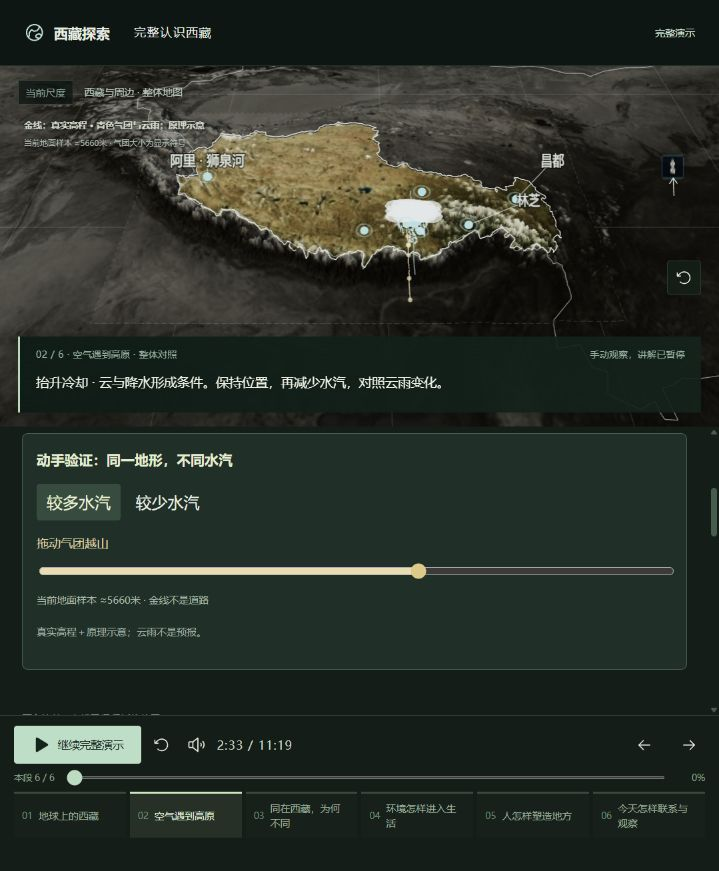
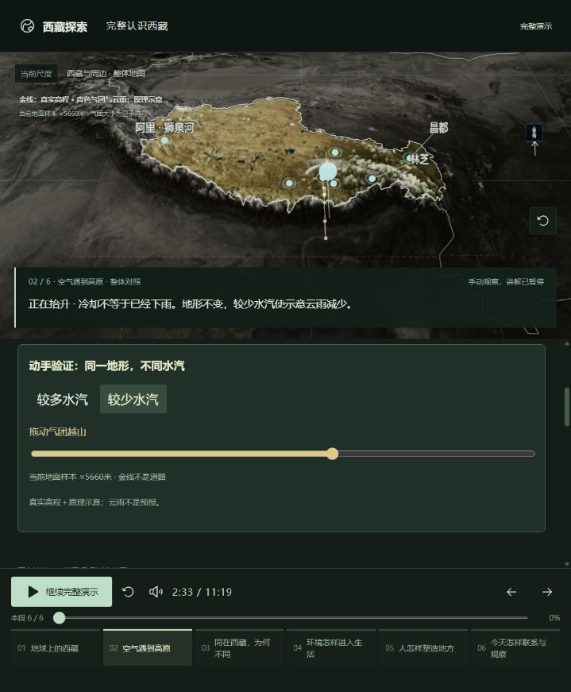
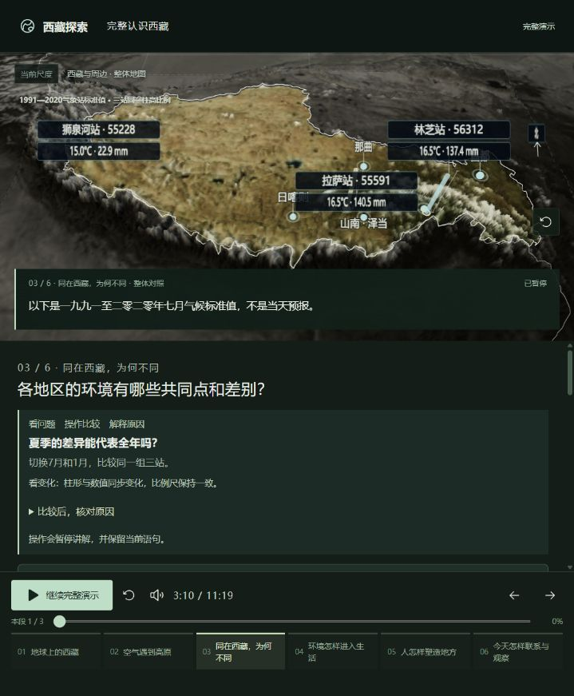
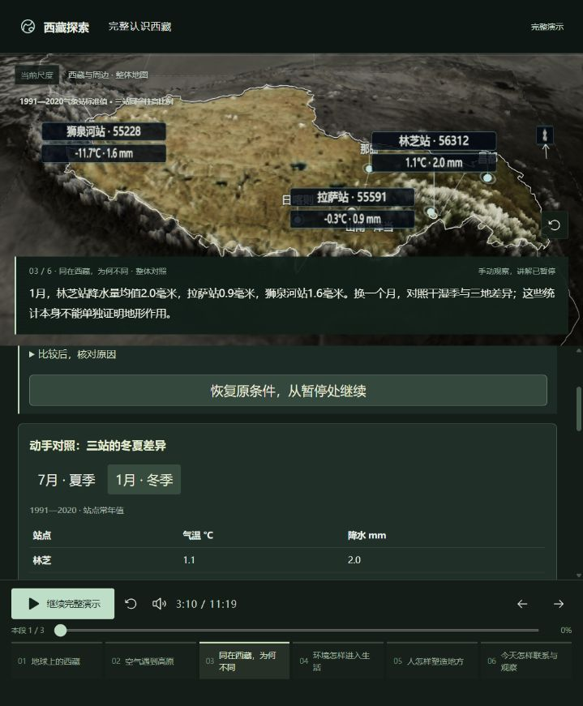
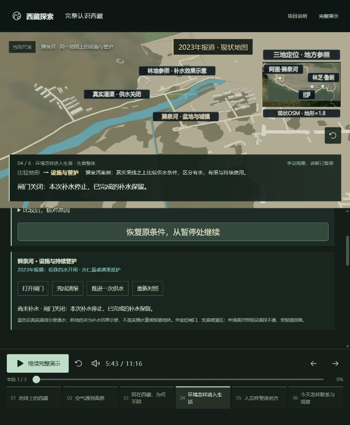
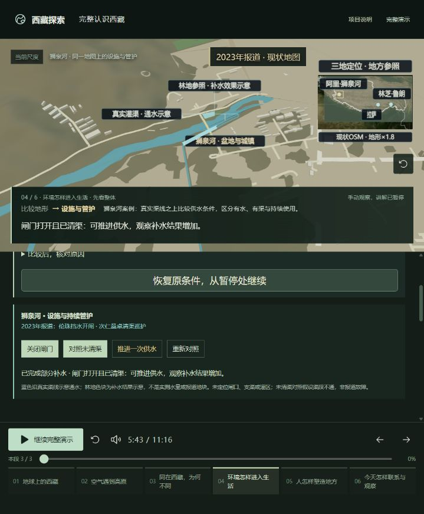
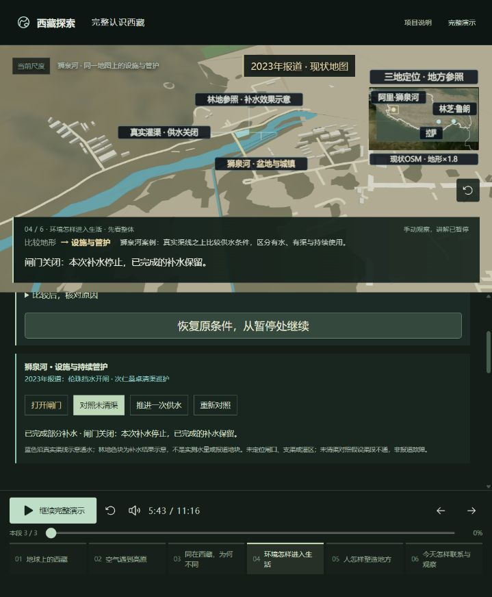
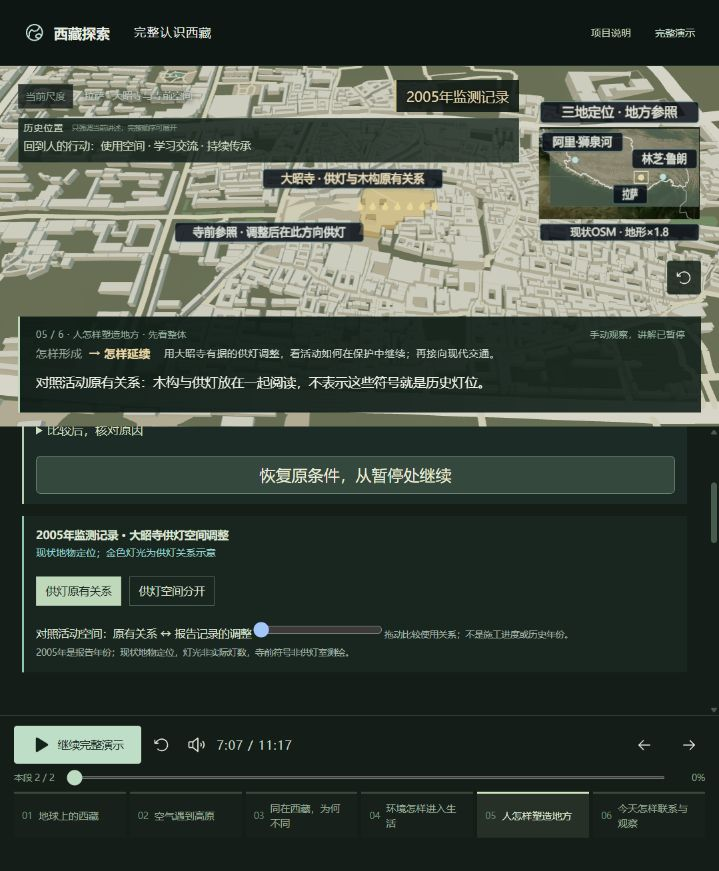
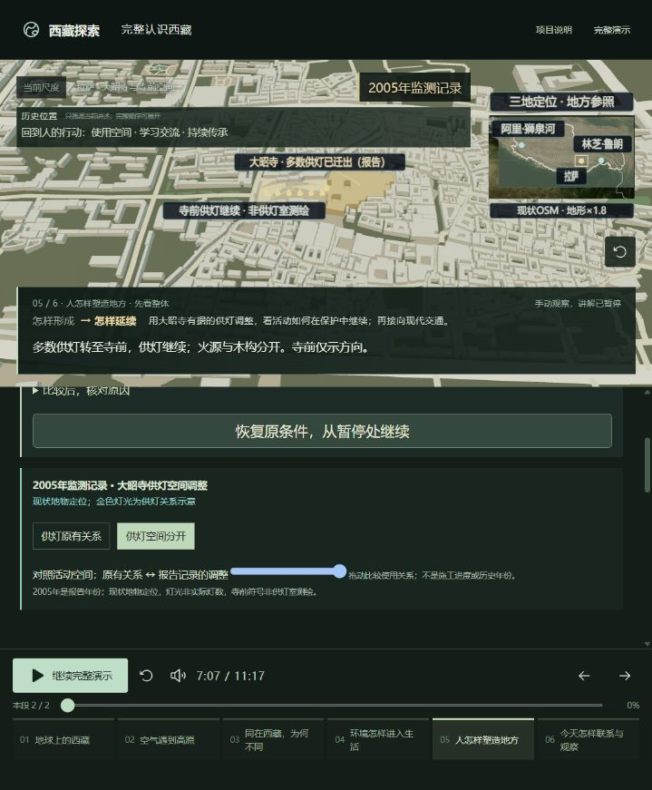
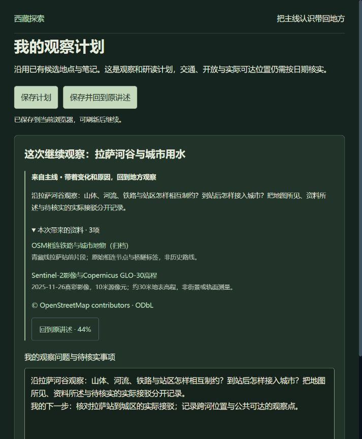
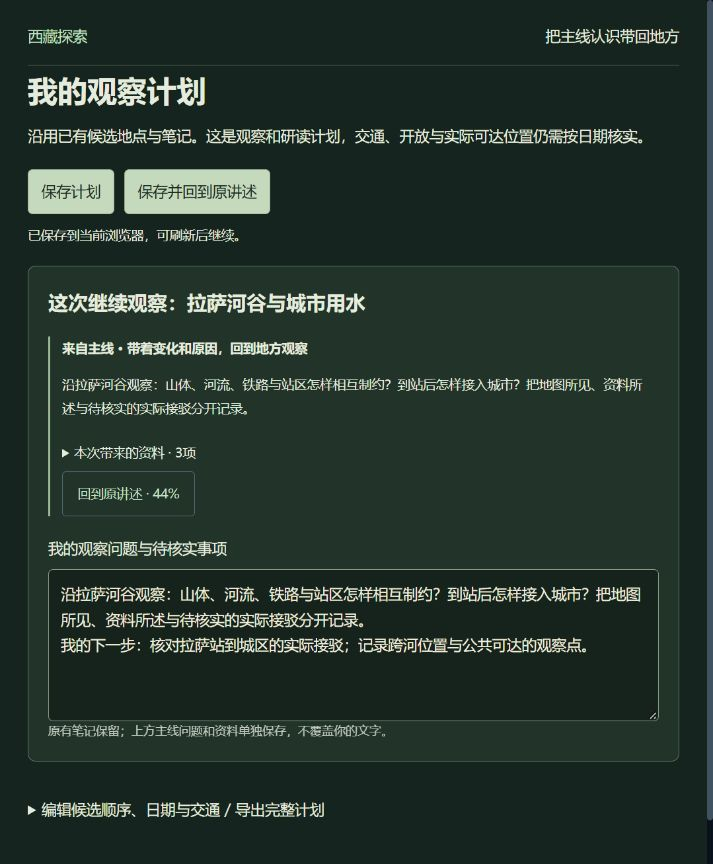
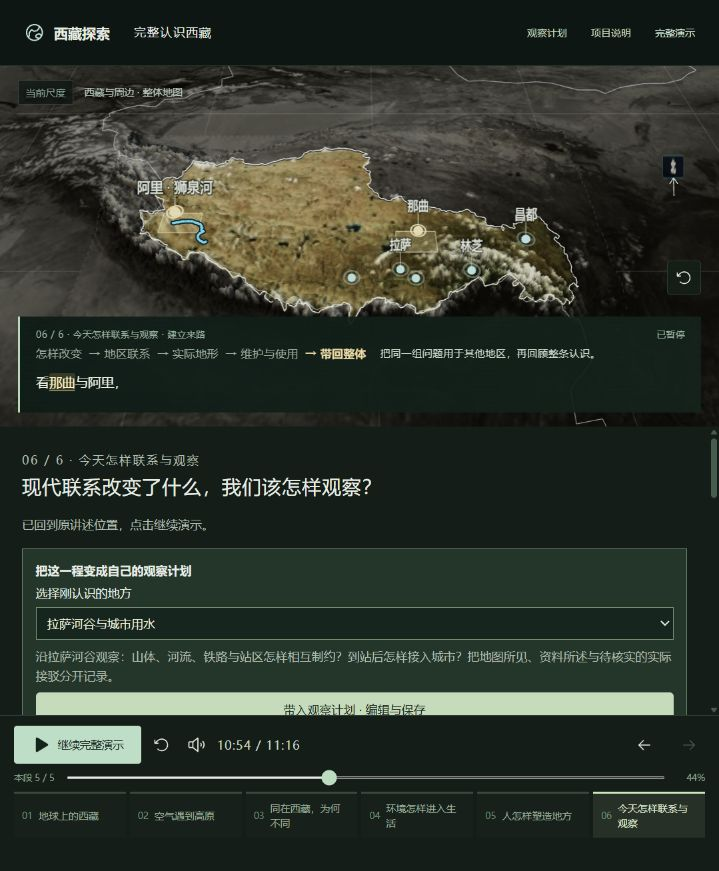
03 / 固定问题清单
处理顺序：M2历史因果 → M1生活结果 → M3观察交接 → M4理解验收。M1、M2演示与M3观察交接已实现并定向检查；接下来只做M4首次观看者理解验收。
M1 · 第4章 · 演示已补，待理解验收
采用2023年狮泉河盆地护林报道与现状OSM灌渠；设施、清渠与补水作同图功能对照。没有证据的闸口、支渠和灌区不补造。
M2 · 第5章 · 演示已补，待理解验收
优先核对已有专题中的历史空间/使用调整材料，重组一个完整案例进入主线；保留来源、年份性质和推论边界。
M3 · 第6章收尾 · 功能与操作已检查
复用现有观察计划，携带地点、问题、资料和精确录音位置；编辑保存后刷新可恢复，返回保持暂停并恢复原字幕。保留已有笔记与候选顺序。
M4 · 收口门槛 · 已准备，未执行
使用独立观看者任务单与主持人标准，记录三人逐章原话、画面指认、原因、资料边界、操作和返回证据。先开放回答，再自主操作，不由主持人教答案。
真实观看者完成0/3场；准备方案不等于已通过理解验收。
04 / 如何停止重复迭代
从整体到局部认识西藏，地理、气候、生活、历史文化、发展与旅游相互衔接。
逐渐增加模型、地点、文字和标注，却把“讲到了”当作“演示清楚了”；频繁播放和局部打磨缺少结束条件。
六章与现有21段冻结。保留可用的气流、数据对照、桥梁和沿线观察；完整年代与扩展案例继续放在专题。初次验收只新增说明与记录；随后按授权替换M2历史段与M1生活段，21段不变，总时长11:16。
M1、M2与M3已完成本轮实现和操作检查；后续只做M4理解验收，记录真实误解后再决定是否修复。资料不支持的效果删除或降为明确的原理示意，不补造历史空间。
M4未做前保持“待验收”。通过后停止增加模型、案例、标签和时长调整，只处理新发现的事实错误或阻断使用的问题；新增愿望进入下一版本。
停止条件：四项都有明确结果与证据，六章能被用户解释，未解决问题被公开保留。测试通过、录音齐全、完整播放结束，都不能单独替代这个条件。
05 / 这次证明了什么
本次仅准备M4首次观看者理解验收：六章任务、开放提问、主持判定与空白记录表。不改主线内容、模型、录音或时长，不重播整场。
按现有六章与实际控件编写任务，区分首次回答、自主操作后理解和提示后完成。计划3名首次观看者，目前0场；没有用户理解通过结论。此前功能与操作证据保留在更新记录中。
截图中的小标签与地图信息在当前窄视口存在拥挤风险；颜色也承担部分区分作用。此处记录风险，不声称已通过无障碍合规检查，本轮不扩展为手机适配项目。
资料责任分三层：有出处的事实、从事实做出的解释、为了理解而使用的原理示意。所有后续变化必须标明所属层级；现状地图不等于历史测绘，规划不等于建成，学习机会不等于已掌握技艺。